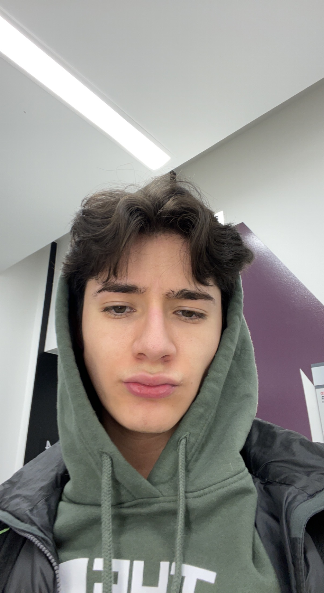

Let me tell you about myself! I am 21 years old, I am born and raised here in Colorado. One of the biggest things I strive for is to change people's lives positively. I love to try new things that make me think outside the box to figure out a solution to a problem. I am grateful to be apart of this course, and cannot wait to see what this opportunity brings!

Here are somethings I find interesting!
I find the development of crypto super intresting. How crypto is going to be used in future currency. If crypto will ever be a main tender for the US
Another thing that I find interesting are NFT's. NFT's are different from crypto, but are pretty similar. I had developed my own nft project before, and I work with a group of people who also find them interesting. NFT's are slowly making their way into modern life.
Lastly, I love to create random projects. If thats playing around with tech or any type of hobby. I try to find things that make me super happy. Searching for things that make me happy allow me to find who I am.